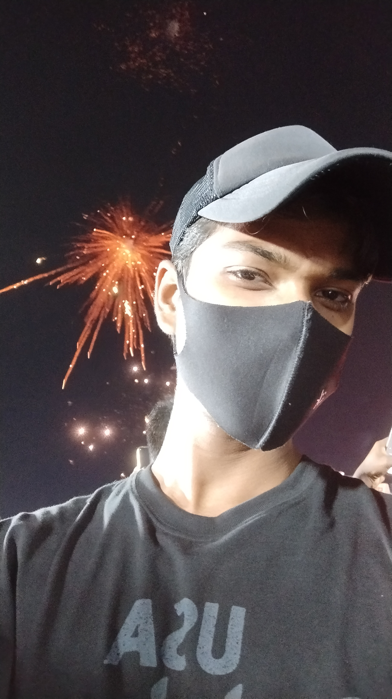
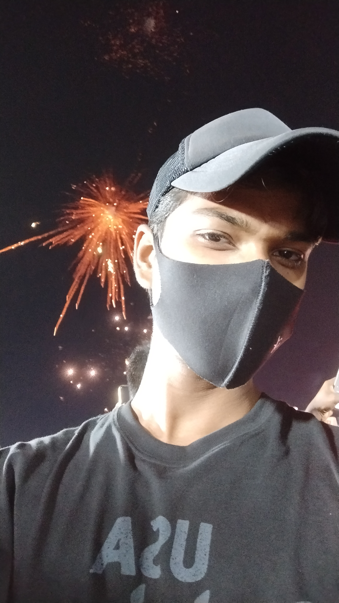
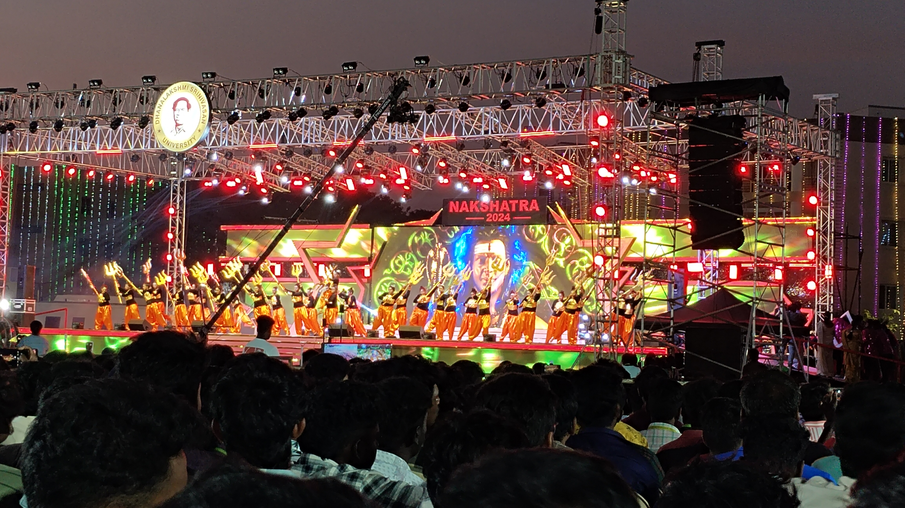
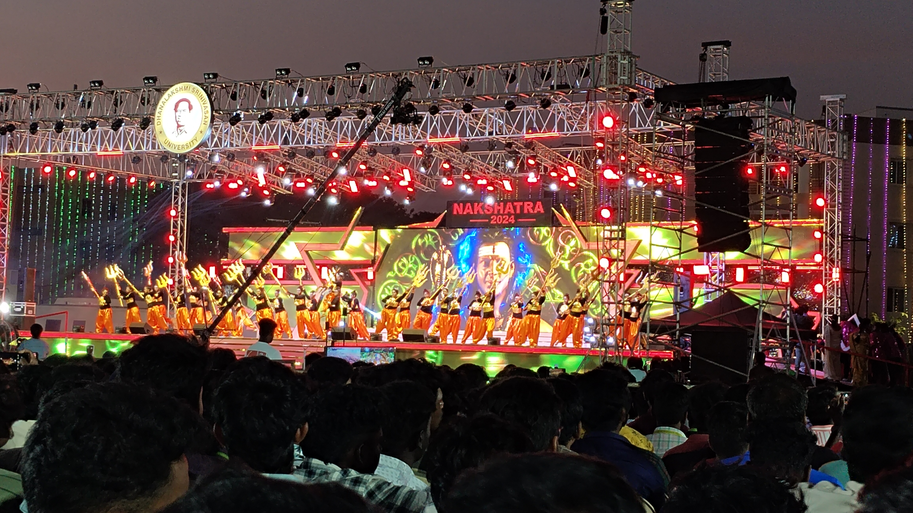
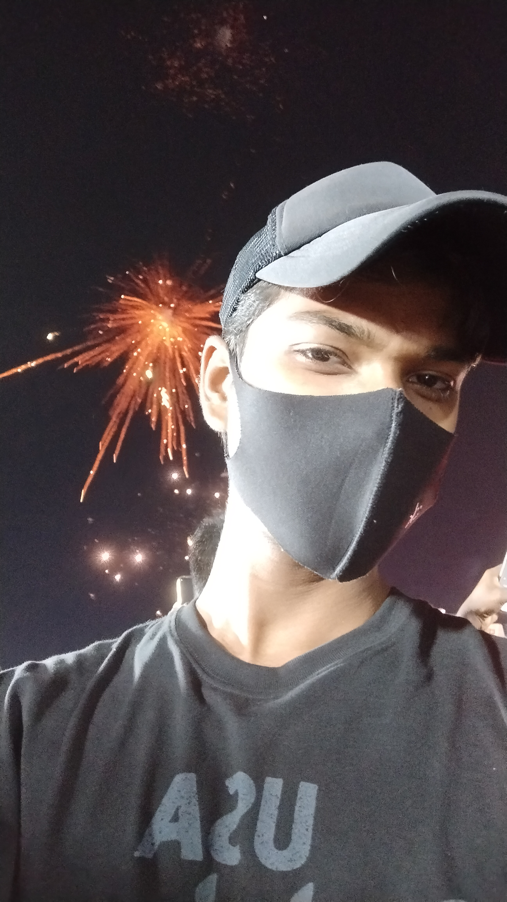
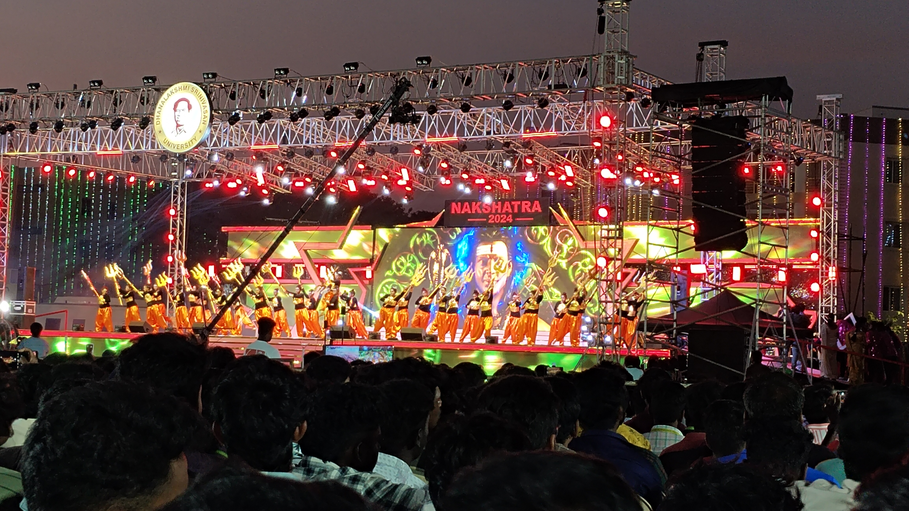

 


At our college, cultural activities form an integral part of campus life, offering students a vibrant platform to express their creativity, heritage, and talents. Throughout the academic year, various cultural clubs and committees organize events, fests, and competitions that reflect the rich diversity and spirit of the student community.
The highlight of the year is our annual cultural fest, "NAKSHATRA", which brings together students from across the region for days of music, dance, drama, fashion, and art. It features performances by both student artists and invited professionals, creating a dynamic atmosphere of celebration and artistic expression.
Our cultural activities celebrate inclusivity, encouraging participation from all backgrounds and disciplines. Festivals like Diwali, Eid, Holi, Onam, Pongal and Christmas are observed with student-led programs that foster unity and cultural appreciation.


Cultural activities not only goes beyond entertainment—they play a vital role in shaping well-rounded individuals. By encouraging creativity, collaboration, and self-expression, the college ensures that students not only excel academically but also grow socially and emotionally. These events leave lasting memories and help build a strong, inclusive campus community where every student has a voice and a stage.
These experiences not only enrich student life but also develop essential soft skills such as teamwork, leadership, and event management.